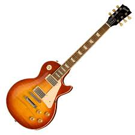

The Guitars and Who Made Them Famous
Just a handful of guitars that even if you don't know how to play, you should still know about these beautiful instuments
Just a handful of guitars that even if you don't know how to play, you should still know about these beautiful instuments
This guitar has had a long life since 1954. This has been a go to guitar for many famous players. A few you may have heard of Eric Clapton, Jimmy Hendrix, Jeff Beck, and even Buddy Holly. The list of players goes on and on. Due to the popularity of this guitar, Fender has made a signiture line of strats, modeled after the specifications similar to the performer who used it.

A bit older guitar with a birth year of 1952, but none the less epic of an axe, is the Gibson Les Paul. Even none musicians can probably reconize that name. Over the years it has earned its crown as the king of rock and roll. Many performers, such as Jimmy Page, Slash, Joe Perry, Peter Frampton and Pete Townshend, have played their way into rock and roll history with this guitar. It's a much heavier guitar than the Fender Strat, but also produces a bolder sound.
As to no ones surprise, I have to mention here the white unicorn
of guitars. The Gibson Double Neck, officially called the Gibson EDS-1275. It came into creation in 1958 and still holds the title as the coolest guitar.
It takes a neck and half a body from a 12 string electric guitar and combines it with a neck and other half of the body from a 6 string electric. This gives you the ability to play very melodic rhythm on the 12 string during a verse and without skipping a beat jump into a kick-in-the-face guitar solo on the 6 string. On top of it just plain looking amazing, it got a little help into guitar history books from Jimmy Page. It was used for the famous recording and performaces of Stairway to Heaven.